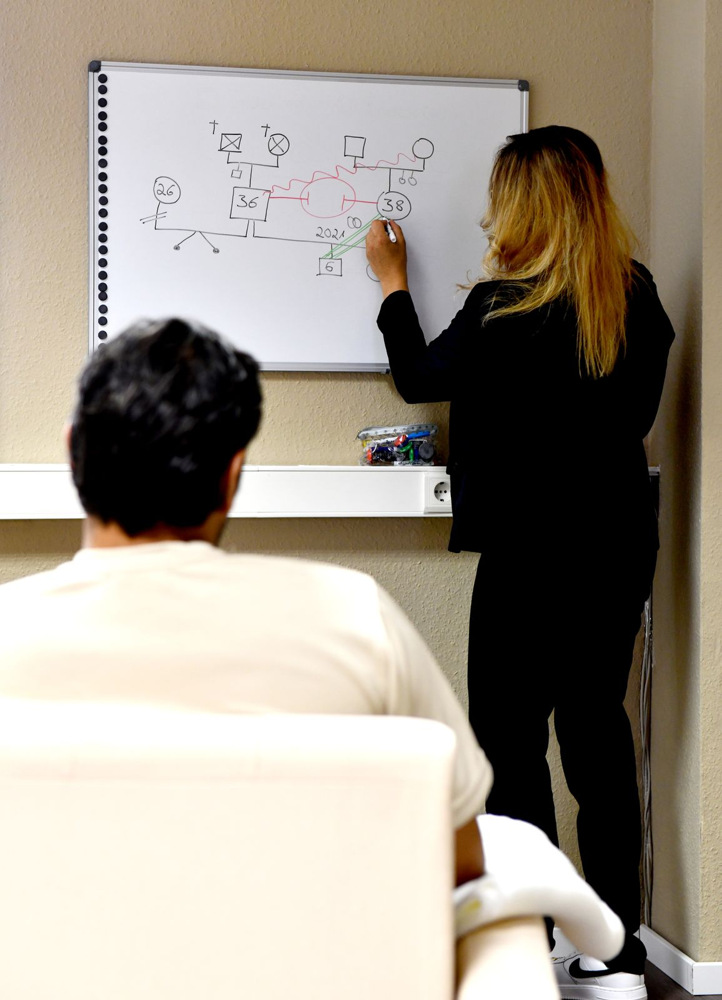
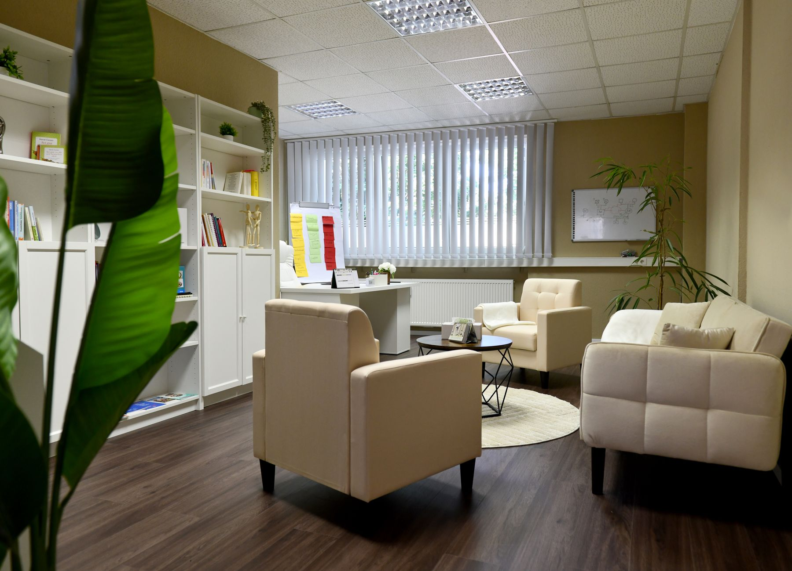

Einzelberatung
Begleitung bei belastenden Lebenssituationen und Krisen, bei Beziehungs- und Bindungsthemen sowie bei der Stärkung von Selbstwirksamkeit und persönlichen Ressourcen.
Manchmal geraten wir in Lebenssituationen, die sich schwer allein lösen lassen. Ich begleite Einzelpersonen, Paare und Familien dabei, wieder Klarheit zu gewinnen, neue Perspektiven zu entwickeln und eigene Lösungen zu finden.
Praxis Unterstraße 14, Wadern Erstkontakt 20 Minuten telefonisch kostenfrei Termine auf Selbstzahlerbasis
Belastende Symptome oder Krisen entstehen selten isoliert. Hinter ihnen stehen oft Beziehungserfahrungen, familiäre Muster und biografische Prägungen, die sich durch verschiedene Lebensphasen ziehen.
Alle Angebote finden in der Regel in Präsenz in Wadern statt. Online- und Videoberatung ist nach individueller Absprache möglich.
Begleitung bei belastenden Lebenssituationen und Krisen, bei Beziehungs- und Bindungsthemen sowie bei der Stärkung von Selbstwirksamkeit und persönlichen Ressourcen.

Unterstützung bei Kommunikationsschwierigkeiten, wiederkehrenden Konflikten und Fragen von Nähe und Distanz, auch bei besonderen Themen binationaler Partnerschaften.

Gemeinsam betrachten wir belastende familiäre Dynamiken, Rollen und Erwartungen und entwickeln neue Wege im Umgang miteinander.

Für Eltern bei Unsicherheiten im Erziehungsalltag, bei Konflikten mit Kindern oder Jugendlichen und bei Fragen zu Bindung und Beziehung.

Altersgerechte Begleitung mit Gefühlskarten, Familienbrett und weiteren systemischen Methoden, auch für Jugendliche im suchtbelasteten Familienalltag.

Reflexion des eigenen Konsums, Entwicklung realistischer Ziele, Rückfallprophylaxe und Begleitung bei der Suche nach weiterführenden Hilfen.

Begleitung von Angehörigen suchtbelasteter Familien bei Überforderung, Schuldgefühlen, Abgrenzung und der Entwicklung hilfreicher Unterstützungsstrategien.

Für Menschen in beruflichen oder privaten Veränderungsprozessen: Entscheidungsfindung, Umgang mit Stress und Überforderung, Klärung von Rollen und Erwartungen.

Beratung im Gehen in der Natur rund um Wadern. Viele Menschen erleben das Gehen als entlastend, um Gedanken zu ordnen und leichter ins Gespräch zu kommen.
Das Genogramm ist eine grafische Darstellung Ihrer Familiengeschichte über mehrere Generationen hinweg. Es macht Beziehungsstrukturen, wiederkehrende Muster, Verluste, Bindungsabbrüche und Rollenbilder sichtbar.
Oft wird dadurch verständlicher, warum bestimmte Themen im eigenen Leben immer wieder auftauchen und welche Stärken ebenfalls aus der Familiengeschichte mitgebracht wurden. Die Arbeit mit dem Genogramm kann entlastend sein, weil sie persönliche Schwierigkeiten in einen größeren Zusammenhang einordnet.
Verstehen, was wirkt. Verändern, was belastet. Stärken, was trägt.

Geboren und aufgewachsen im Saarland, führte mich mein beruflicher Weg in verschiedene Arbeitsfelder der psychosozialen Versorgung. Besonders prägend waren meine Tätigkeiten in der Suchthilfe und im psychiatrischen Kontext in Frankfurt und Darmstadt sowie in der Kinder- und Jugendhilfe.
Meine Haltung ist systemisch, ressourcenorientiert und lösungsfokussiert. Ich begleite Menschen mit fachlicher Kompetenz, Wertschätzung und einem offenen Blick auf ihre individuelle Lebensgeschichte. Besonders wichtig ist mir eine Zusammenarbeit auf Augenhöhe. Sie sind Expertin oder Experte für Ihr Leben.
Anzahl und Häufigkeit der Sitzungen richten sich nach Ihrem Anliegen und werden individuell vereinbart.
Sie erreichen mich telefonisch, per E-Mail, per WhatsApp oder über das Kontaktformular. Der erste telefonische Kontakt von 20 Minuten ist kostenfrei.
Der erste Termin dient der Auftragsklärung. Wir besprechen Ihr Anliegen, Ihre Situation und Ihre Erwartungen an die Beratung.
Sie lernen mich und meine Arbeitsweise kennen und entscheiden im Anschluss, ob Sie eine weitere Zusammenarbeit wünschen.
Sie bestimmen mit, wie intensiv und über welchen Zeitraum die Beratung stattfindet. Manche Themen klären sich in wenigen Gesprächen, andere brauchen längere Begleitung.
Ich arbeite ausschließlich auf Selbstzahlerbasis. Dadurch entfällt das Antragsverfahren bei der Krankenkasse, Termine sind zeitnah möglich und es wird keine Diagnose bei der Krankenkasse hinterlegt.
Vereinbarte Termine sind verbindlich. Bitte sagen Sie mindestens 24 Stunden vorher ab (werktags). Bei kurzfristigerer Absage oder Nichterscheinen wird das vereinbarte Honorar berechnet, sofern der Termin nicht anderweitig vergeben werden kann. Unter bestimmten Voraussetzungen können selbst getragene Kosten steuerlich berücksichtigt werden. Bitte lassen Sie das gegebenenfalls steuerlich prüfen.
Ein geschützter Raum, in dem Sie sich mit Ihren Fragen, Unsicherheiten und Erfahrungen ernst genommen fühlen können.

Stefanie Abdulrazak
Unterstraße 14
66687 Wadern
Der erste telefonische Kontakt von 20 Minuten ist kostenfrei. Darin klären wir, ob und wie ich Sie unterstützen kann.
Schreiben Sie mir Ihr Anliegen gern in Stichworten. Alles, was Sie mir mitteilen, unterliegt meiner Schweigepflicht.